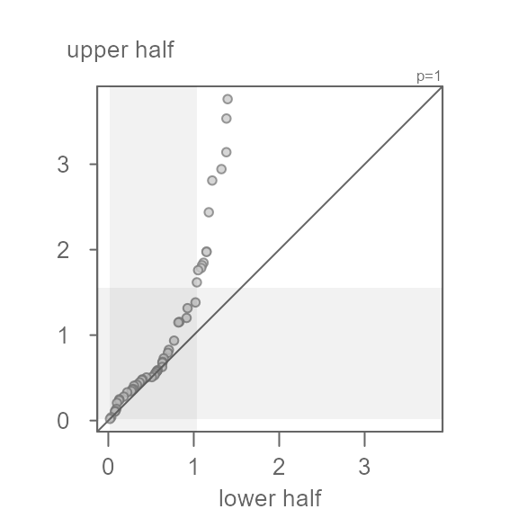
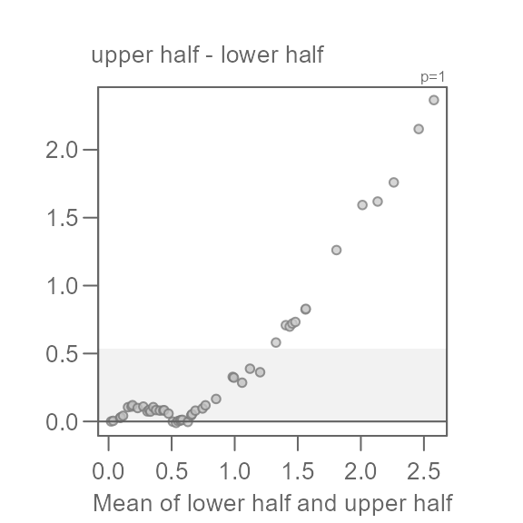
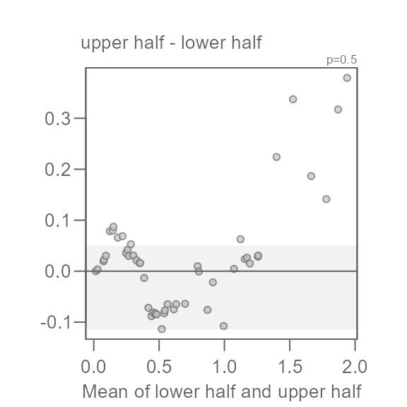

Introduction
The symmetry QQ plot is inspired by Chambers et al.’s symmetry plot which pairs the quantiles of the lower half of a batch of values with matching quantiles of the batch’s upper half of values. The median value is used to define the halves as follows:
\[ lower\ half = median - y_i\\ upper\ half = x_{n+1-i} - median \]
where \(n\) is the number of values in \(x\), \(i\) = 1 to \(n/2\) if \(n\) is even or \(i\) = 1 to \((n+1)/2\) if \(n\) is odd.
The plot is interpreted no differently than a QQ plot. If the data are symmetrical about the batch’s median value, the points will hug the 1:1 line. For example, given a batch of 1000 normally distributed values shown in the left density plot, we would expect the symmetry QQ plot to show the points very close to the 1:1 line as shown in the right plot.

The axes show the distance of each observation in the batch to that batch’s median value. The units are those of the batch. Points that are close to 0 are those observations closest to the median. Points that are furthest from 0 are those that are at both tail ends of the distribution.
The symmetry QQ plot function
The symmetry QQ plot is generated using the eda_qq()
function with the sym = TRUE argument.
Before exploring the function and its output, let’s first generate some data. Here, we’ll create a slightly skewed dataset (one that is skewed towards large values).
Next, let’s generate the symmetry QQ plot.

If you are familiar with the use of eda_qq as an
empirical QQ plot function, you are familiar with the grey boxes and
dashed lines that highlight the IQR and mid 75 percent of the batch,
respectively. Here, given that the x and y axes are mapping the lower
and upper halves of the batch, the lower and upper parts of the IQR are
bounded by 0 given that 0 is the central value
of x. The dashed lines are to be interpreted similarly–75%
of the values are to the left of the vertical dashed line and below the
horizontal dashed line.
In this example, the points do not hug the 1:1 line, especially
outside of the IQR region–they curve upward away from the 1:1 line. This
is to be expected given that we generated a right skewed dataset. For
example, a point in the lower half of x that is about
1 unit away of the median has a matching quantile in the
upper half of x that is about 1.4 units away
of the median placing it further away from the median than its lower
half counterpart. This skew becomes more pronounced as we move closer to
the tails. The furthest point away from the median is about
1.4 units for the lower half and a little less than
4 units away for the upper half.
The eda_qq function allows the use of a re-expression.
This feature can be helpful if one seeks to symmetrize a batch of values
using a power transformation. For example, if we wanted to render
x more symmetrical, we could try a power of
0.5 (i.e. the square root) by setting the argument
p = 0.5.
eda_qq(x, sym = TRUE, p = 0.5)
Here, the square root transformation does a good job in rendering
x more symmetrical. Note that the points do not hug the 1:1
exactly–this is fine. What we don’t want to see is a systematic bend in
the points away from the 1:1 line. For example, if we were too
aggressive with the power transformation and chose a log transformation
(p = 0), we would end up with a left skewed batch of
values.
eda_qq(x, sym = TRUE, p = 0)
The symmetry QQ plot can leverage eda_qq’s built-in
Tukey mean-difference plot (md = TRUE) if a finer grain
resolution of the points vis-a-vis the 1:1 line is desired. Note that
with the Tukey mean-difference plot, the x and y axes values are
different, but this need not matter since we are simply leveraging this
plot to help identify a power transformation that will give us a
symmetrical distribution.
Here is the original (untransformed) data in a Tukey mean-difference plot:
eda_qq(x, sym = TRUE, md = TRUE)
The 1:1 line is now the horizontal black line centered on 0.
Here’s the transformed version of the data:
eda_qq(x, sym = TRUE, md = TRUE, p = 0.5)